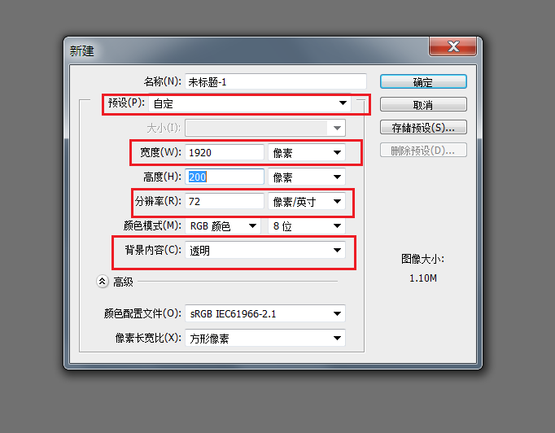
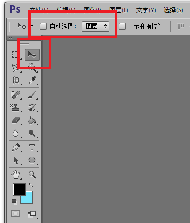

前端需要的ps切图技巧
ps的功能很复杂很强大，实际上单单精通ps软件，就可以走遍全天下。作为前端我们也需要使用ps切图，但我们不需要那么复杂，前端的ps技巧有几种，我只会其中一种，现在和大家分享一下。
我使用的是ps6。本篇文章的前提是已经了解了ps的一些操做。
1.Photoshop界面设置。
(1).新建设置
新建一个图层时的各项指标，用红色的方框圈出，有的时候我们需要自己制作一些sprites图片，所以要会新建图层，当然，如果是直接打开Ui做好的图，这一步是不需要的。
预设是自定义
网页的宽度一般使用1920px，注意单位是像素，如果是厘米，请改过来
分辨率有多种选择，一般选择72即可
最后背景要改为透明

(2).移动工具设置
什么是移动工具，请看右侧截图中红色方框中的图标。
移动工具的快捷键：V 移动工具的作用是可以快速选择图层，当我们选中移动工具后 在psd图上用鼠标点击就可以选中要操作图片 执行上面的操作时，记得如下图矩形选框所示 取消自动选择，后面的图标改为--图层